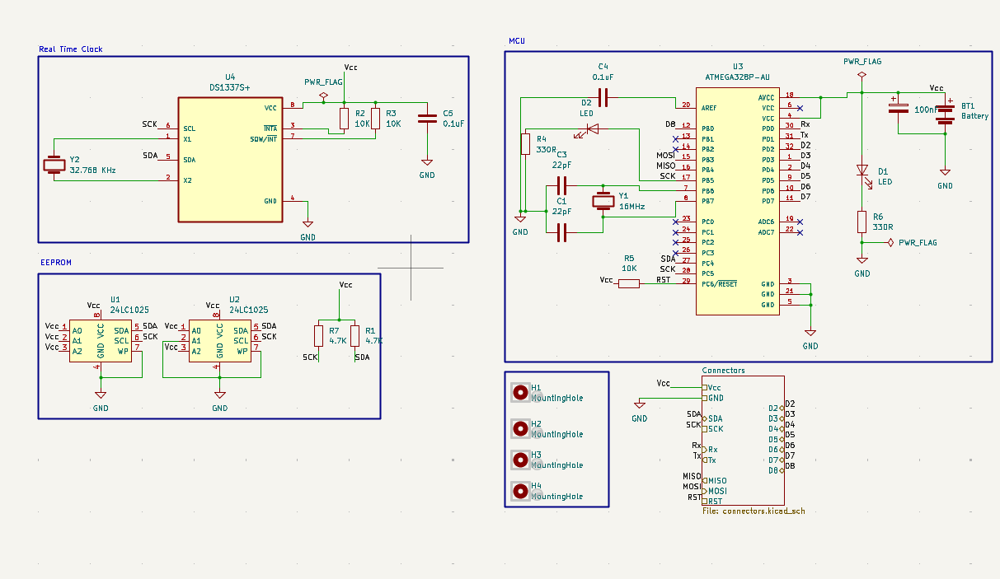
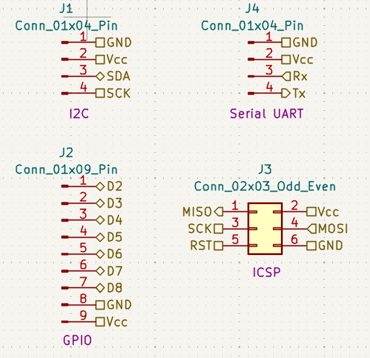
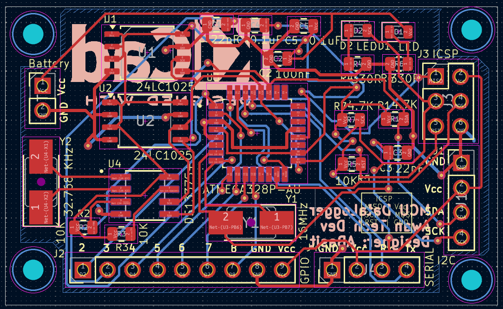
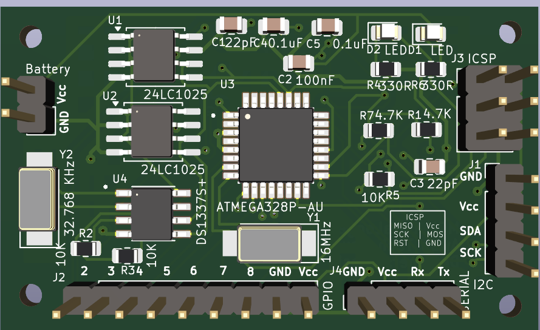

A standalone ATmega328P data logger PCB that timestamps sensor readings via an RTC and stores them to a microSD card over SPI.
This project focuses on the design and fabrication of a custom PCB for a standalone ATmega328P-based data logger. It logs sensor data onto a microSD card using the SPI protocol, with real-time timestamping provided by an RTC (Real-Time Clock) module. The PCB integrates power regulation, data storage, and I/O connectivity for multiple sensors.
The ATmega328P handles data acquisition from sensors and communicates with the microSD card over SPI for storage. The DS3231 RTC provides accurate timestamps via I2C. Power regulation is done through an LM1117, supplying 3.3 V to the microSD card while the MCU operates at 5 V. The PCB includes separate ground planes for digital and analog signals to reduce noise.
The design was completed in KiCad with attention to trace width for SPI lines, minimal via usage, and separation of power lines from signal lines. Pull-up resistors were added to the I2C lines for stable communication with the RTC.
Pseudo firmware logic for sensor logging:
void loop() {
String data = readSensors();
String timeStamp = rtc.getTime();
logToSD(timeStamp + "," + data);
delay(1000); // 1 Hz logging
}
The system successfully logged temperature, humidity, and light sensor data to the SD card in CSV format. Timestamps were accurate within ±2 seconds over a 24-hour period, and PCB power stability was confirmed under continuous operation.




The ATmega328P-based Data Logger PCB is a reliable, low-power solution for field data acquisition. Future improvements could include adding wireless data transmission and an on-board display for real-time monitoring.